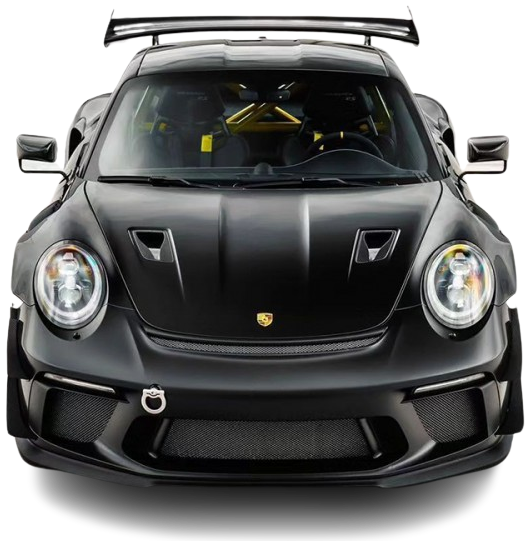

GT3
RS
The brake system modifications are rounded off by the change from a pneumatic brake booster to an electric booster. The race track-proven Porsche Ceramic Composite Brake (PCCB) is still optionally available for all 911 models.The ceramic brake offers low weight and practically no fading.
The origins of the company date to the 1930s when Czech-German automotive engineer Ferdinand Porsche founded Porsche with Adolf Rosenberger, a keystone figure in the creation of German automotive manufacturer and Audi precursor Auto Union and Austrian businessman Anton Piëch, who was, at the time, also Ferdinand Porsche's son in law. In its early days, it was contracted by the German government to create a vehicle for the masses, which later became the Volkswagen Beetle. After World War II, when Ferdinand, a member of both the Nazi Party and the SS, would be arrested for war crimes, his son Ferry Porsche, an SS volunteer, began building his own car, which would result in the Porsche 356.